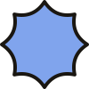

about mehey, my name's Lauren
I'm a maker and creative living in Northern California, and I love all things creative hobbies.
I've been sewing, making pottery and doing other creative things my whole life, not because I was particularly amazing at them, but because they brought me joy and helped me get into a state of flow that felt amazing.
I decided to start sharing my creative process on YouTube in August of 2024, and it's catapulted me on this amazing journey of exploring and sharing my creativity.
I'm so grateful you're here. I hope something I've made has been helpful to you.
If you want to stay in touch, you can find me on Instagram and YouTube.